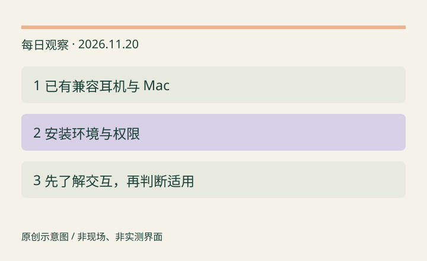
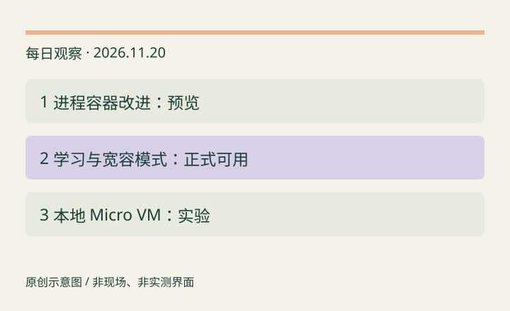

原创图像说明
每日观察编辑以代码绘制；无第三方照片、商标或界面素材。图形用于本期刊物，不代表来源方背书；非现场或实测记录。
把资料整理成 JSON，先验字段，再核原文
制作与署名：每日观察 · 2026-11-20 · 原创SVG

来源与日期
- aistudio.google.com ↗ · 动态文档，2026-11-20读取
已有 AirPods 的 Mac 用户，多了一个头控鼠标开源选项
制作与署名：每日观察 · 2026-11-20 · 原创SVG

来源与日期
- sspai.com ↗ · 2026-11-08
- github.com ↗ · 动态README，2026-11-20读取
Windows 代理隔离更新，三种功能处于不同开放阶段
制作与署名：每日观察 · 2026-11-20 · 原创SVG

来源与日期
- blogs.windows.com ↗ · 2026-11-17
Aave 的 USAT 上架提案仍在投票，不是已经开放借款
制作与署名：每日观察 · 2026-11-20 · 原创SVG

来源与日期
- app.aave.com ↗ · 11月17日创建；页面动态状态
- governance.aave.com ↗ · 2026-11-17回复
黑山再关闭两章入盟谈判，基金管理仍要过执行关
制作与署名：每日观察 · 2026-11-20 · 原创SVG

来源与日期
- www.consilium.europa.eu ↗ · 2026-11-19 16:58（网页标示）
- data.consilium.europa.eu ↗ · 2026-11-17（PDF首页日期）